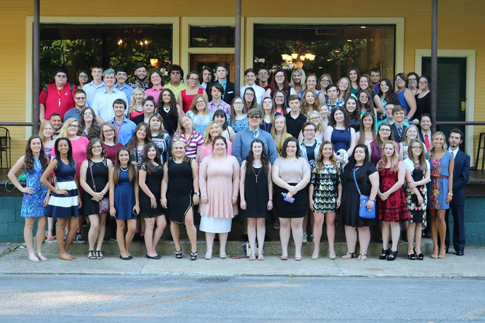

Joe is the reason why I'm as social as I am. When I first joined Upward Bound as a freshmen, I was incredibly scared. I had only known the people at my school, and being in a place where I only knew my sister and maybe 4 other students, it freaked me out. I was socially awkward back then and he helped me talk to people I had never met and become great friends with them. Now, I am totally comfortable talking to people I've never met because of Upward Bound and him. Now as a junior, my favorite part of my summer at UPike is meeting the new members and getting to know them and help them adjust. It can be scary because of not knowing many people, and I try to help them like he helped me.
He is the coolest dude ever. Although he has to dress formally for his job, he is the complete opposite. He can go from khakis and polos to band shirts and tie dye Vans in an instant. He showed me that I can find a job that is both rewarding and fun at the same time and that I should strive for the same. I can tell that he takes a lot of pride in his job of helping prepare students for college and life after graduation.

Current Upward Bound Students (featuring me)